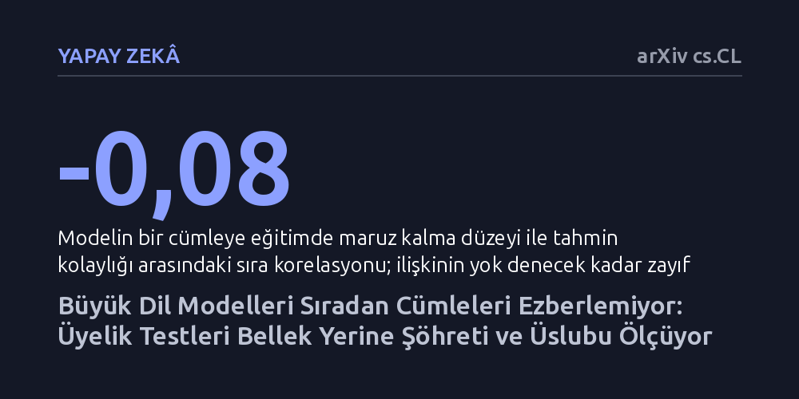

YAPAY-ZEKA · arXiv cs.CL · 2026-09-12
Araştırmacılar, dil modellerinin eğitim verilerini gerçekten hatırlayıp hatırlamadığını kesin tekrar sayılarıyla denetledi. Bulgular, modellerin sıradan metinlerde neredeyse hiç bellek izi taşımadığını, mevcut üyelik testlerinin ise hafızayı değil metnin şöhretini ve üslubunu ölçtüğünü gösterdi.
Yapay zekanın eğitim verilerini kolayca ezberlediği ve bunun çıktı analiziyle güvenle saptanabileceği kabulünün, sıradan metinler için temelsiz bir varsayım olduğunu ortaya koyuyor.

Büyük bir dil modeli bir cümleyi çok düşük bir şaşkınlıkla, yani büyük bir tahmin kolaylığıyla ürettiğinde, akla gelen ilk açıklama modelin bu cümleyi eğitim sürecinde görüp ezberlediğidir. Bu mantık, telif hakkı ihlallerini saptamaktan modellerin gizli kişisel verileri sızdırıp sızdırmadığını anlamaya kadar pek çok denetim mekanizmasının temel dayanağı kabul edilir. Ancak bu çıkarımı doğrulamak bugüne kadar ciddi bir açmazla karşı karşıyaydı: Modellerin hangi metinleri görüp hangilerini görmediğini kesin olarak bilemeyen araştırmacılar, eğitim verisi üyeliğini tahminlere dayandırmak zorundaydı.
Eğer bir yapay zekanın eğitimi sırasında karşılaştığı metinleri ezberleme düzeyi güvenilir biçimde ölçülemezse, modellerin güvenliği ve veri gizliliği konusundaki değerlendirmeler de yanıltıcı temellere oturur. Gerçekten ezberlenen bir veri ile modelin sadece akıcı ve doğal olduğu için kolayca tamamladığı bir metin birbirine karıştırıldığında, hem telif hakkı ihlali iddiaları hem de güvenlik testleri dayanaksız hale gelir.
Bu belirsizliği aşmanın yolu, bir cümlenin modelin eğitim kümesinde kaç kez geçtiğini tahmin etmek yerine kesin sayılarla belirlemekten geçer. Araştırmacı bu amaçla eğitim veri setleri tamamen kamuya açık olan OLMo-2 ve Pythia model ailelerini mercek altına aldı. 1 milyar ile 13 milyar parametre arasında değişen beş farklı model seçilerek, bu modellerin eğitiminde kullanılan metinlerin kamuya açık dizinleri üzerinden her bir cümlenin eğitim kümesinde tam olarak kaç defa yer aldığı kesin olarak hesaplandı.
Metnin akıcılığı ve dil kalitesinin yarattığı yanılsamayı ortadan kaldırmak için özel bir deneysel kurgu hazırlandı. Aynı cümle iki farklı model ailesine eşzamanlı olarak okutuldu; böylece cümlenin genel doğallığı veya dilbilgisi düzgünlüğü her iki model için de eşitlenerek denklemin dışına çıkarıldı. Bu karşılaştırma sayesinde, modellerin bir cümleyi tahmin etme kolaylığı ile o cümlenin modelin kendi eğitim kümesinde yer alma sıklığı arasındaki gerçek bağıntı doğrudan ölçülebilir hale geldi.
Elde edilen sonuçlar, yaygın inanışın aksine, günlük hayatta karşılaşılan sıradan metinlerde modellerin eğitim verilerine dair neredeyse hiçbir somut iz taşımadığını gösterdi. Cümlenin eğitim kümesindeki gerçek tekrar sayısı ile modelin tahmin kolaylığı arasındaki sıra korelasyonu -0,08 seviyesinde kaldı. Eksi birin kusursuz bir ilişkiyi, sıfırın ise tam bir ilişkisizliği gösterdiği bu ölçekte böylesi bir değer, modelin sıradan bir cümleyi eğitimde görmüş olmasının tahmin başarısına neredeyse hiçbir katkı sağlamadığını ortaya koydu.
Öte yandan bu izin belirginleştiği durumlar da incelendi. Bir cümlenin model belleğinde güçlü bir sinyal üretebilmesi için eğitim verisinde yaklaşık bin kopyanın üzerine çıkması gerekiyordu. Ancak kıskaç tam da bu noktada diğer taraftan kapandı: Bin kopyadan fazla geçen cümleler incelendiğinde, her iki bağımsız model ailesinin veri setlerinin aynı cümleler üzerinde anlaştığı görüldü. Çünkü bu ifadeler herkesçe bilinen, meşhur ve kalıplaşmış sözlerdi. Dolayısıyla sinyalin güçlendiği yerde, modelin bir metni gerçekten hatırlaması ile metnin kültürel olarak şöhretli olması birbirinden ayırt edilemez hale geliyordu.
Çalışmada yapılan diğer iki ölçüm, mevcut üyelik tespit testlerinin nasıl yapay başarılar ürettiğini somutlaştırdı. Yaygın yöntemlerden biri, eğitimde yer alan bir cümlenin tek bir kelimesini değiştirerek eğitimde yer almayan sahte bir kontrol cümlesi oluşturmaktır. Dil modeli bu kıyasta orijinal cümleyi tercih ediyordu; fakat bu tercih farkı, orijinal cümle eğitim verisinde ister bir kez ister yüz kez geçmiş olsun tamamen aynı kalıyordu. Yani modelin ödüllendirdiği şey geçmişteki bir hafıza kaydı değil, yazarın doğal kelime seçimiydi.
Üstelik kontrol cümlelerinin üslubu ve dil kaydı eğitimdeki cümlelerden biraz farklı seçildiğinde, bir üyelik tespit edicinin başarım puanı (AUC) 0,83 seviyesinden birdenbire 0,94'e yükseliyordu. Oysa 0,5'in rastgele yazı tura atmaya, 1,0'ın ise kusursuz ayrıma denk geldiği bu ölçekte yaşanan sıçrama, modelin hafızasını değil yalnızca iki metin grubu arasındaki biçim ve tarz farkını yansıtıyordu. Sonuç olarak mevcut testler modellerin hafızasını değil, metinlerin üslubunu ve popülerliğini ölçmektedir.